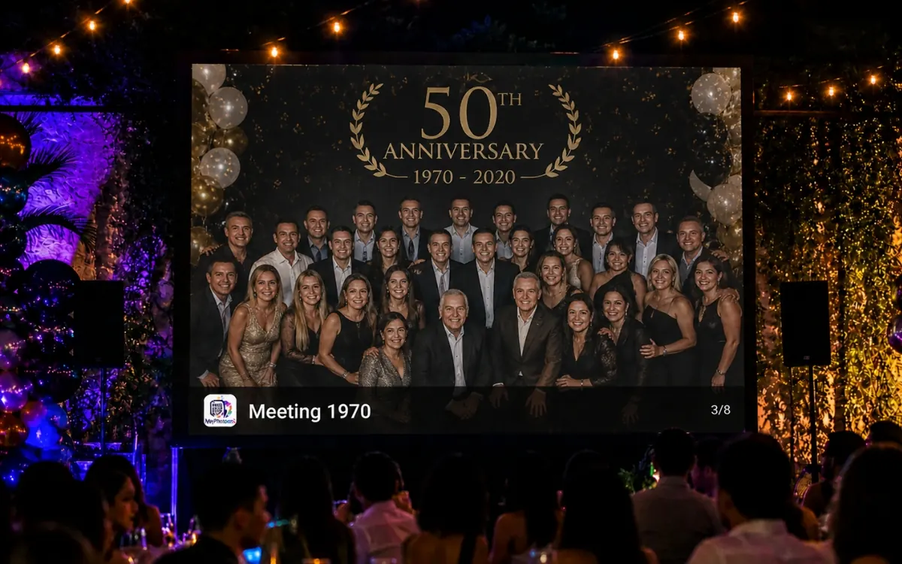
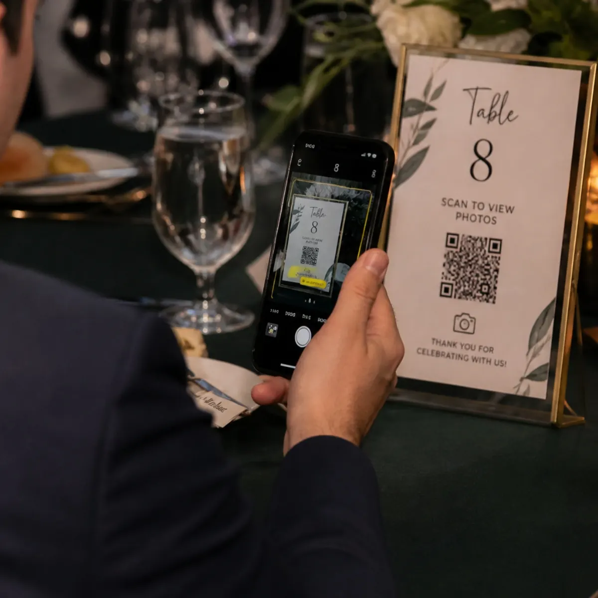
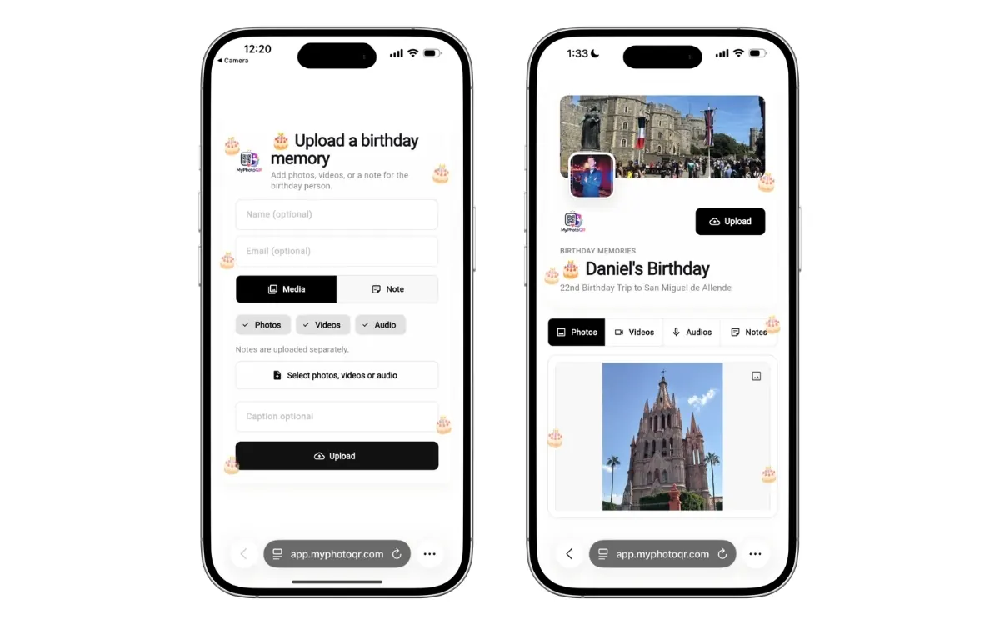

Simple guest experience
Scan the QR, open the browser, upload. No app store or account creation slows guests down.
Events · Anniversaries
Make it easy for family and friends to share toasts, throwback photos and new memories with one QR code and one private event gallery.
One private album for family memories and tributes

Anniversary events often mix old memories with new photos, so the album should invite guests to share both.
Scan the QR, open the browser, upload. No app store or account creation slows guests down.
Capture candid angles, guest perspectives and spontaneous moments you would never receive later.
Review content before it reaches the live gallery or slideshow when you want tighter control.
Keep one private album during the event and one ZIP archive after the event.
Use cases
Make the upload path match the actual flow of the event. The more naturally guests see the QR code, the more complete your final album becomes.
Best placement ideas
Memory table, dinner menus, anniversary slideshow and family WhatsApp message.
Explore QR album features
Step 1: Guests scan the QR code from a sign, table card or screen.

Step 2: They upload photos or videos directly from their phone browser.
Step 3: You review, feature or display the best moments in the live gallery and slideshow.
They want a fast setup, high guest participation, privacy controls during the event and a reliable way to keep the full archive after the event ends.
No. Guests scan your QR code and upload from their browser on iPhone, Android, tablet or desktop.
Yes. You can turn moderation on, keep uploads pending, hide content or feature the best moments.
Yes. You can export a ZIP file with your event photos and videos after the celebration.
Related pages
Create a wedding photo sharing QR code so guests can upload photos and videos with no app. Collect candid guest moments, run a live gallery and download the archive.
Use a birthday party photo sharing QR code to collect guest photos and videos in one private album. No app required, with live gallery, moderation and ZIP export.
Collect graduation photos and videos with one QR code guests can scan from any phone. Build a live album for ceremony moments, family photos and after-party uploads.
Collect corporate event, conference and retreat photos with a branded QR upload album. Attendees upload from a browser while your team reviews and exports content.
Create the QR album before the event so guests have a simple, visible way to upload from the first minute.
Create album